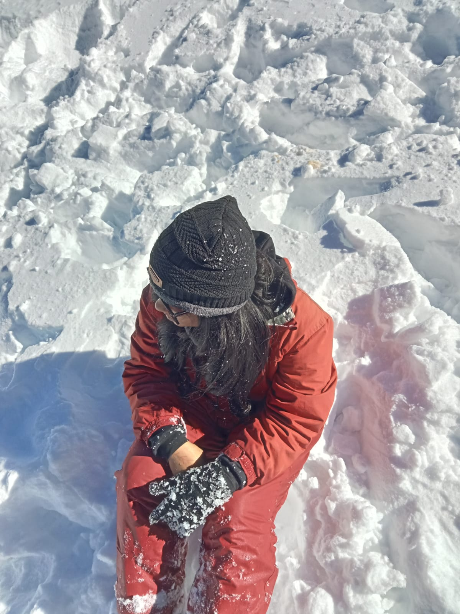

IMFROMATION
Manali is a town, near Kullu town in Kullu district in the Indian state of Himachal Pradesh.
It is situated in the northern end of the Kullu Valley, formed by the Beas River.
The town is located in the Kullu district, approximately 270 kilometres (170 mi) north of the state capital of Shimla and 544 kilometres (338 mi) northeast of the national capital of New Delhi.
A population of 8,096 people recorded in the 2011 Indian census Manali is the beginning of an ancient trade route through Lahaul (H.P) and Ladakh, over the Karakoram Pass and onto Yarkand and Hotan in the Tarim Basin of China. Manali is a popular tourist destination in India and serves as the gateway to the Lahaul and Spiti district as well as the city of Leh in Ladakh.[3]
WEATHER
Manali features a subtropical highland climate (Cfb) with warm summers, relatively cold winters, and a high diurnal temperature variation.
The temperatures range from -7 C (19 F) to 30 C (86 F) over the year with the hottest day crossing 30 C (86 F) and the coldest day going below -7 C (19 F).
The average temperature during summer is between 10 C (50 F) to 30 C (86 F), and between -7 C (19 F) to 15 C (59 F) in the winter.
View of Himalayas from Manali Monthly precipitation varies between 31 mm (1.2 in) in November and 217 mm (8.5 in) in July. On average, some 45 mm (1.8 in) of precipitation is received during winter and spring months, increasing to some 115 mm (4.5 in) in summer as the monsoon approaches. The average total annual precipitation is 1,363 mm (53.7 in). Manali experiences snowfall predominantly between December and the beginning of March. MUST SEE
November To February.
The most favorable month to witness snowfall in Manali is from November to February.
However, by the end of October, the snowfall begins in several places in Manali and lasts till February. Furthermore, the major months when Manali receives maximum snowfall are December, January, and February.